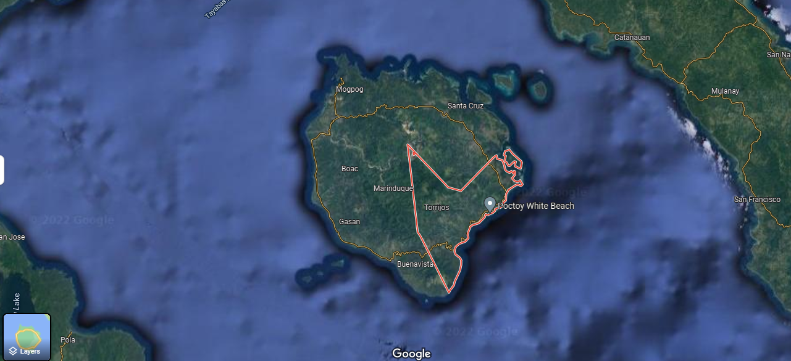
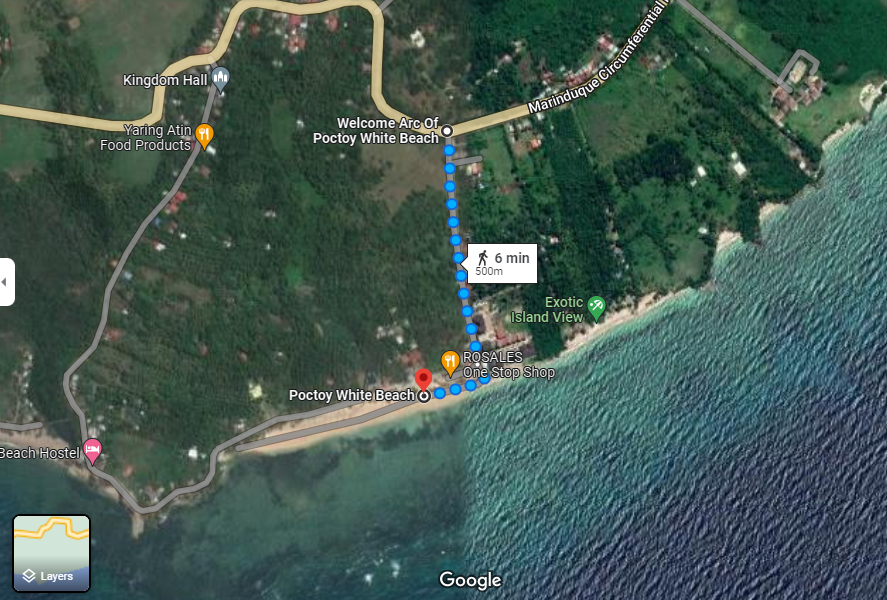

The Location of Poctoy White Beach In Marinduque
Figure 1: The Location of Torrijos In Marinduque

Figure 2: It shows the direction of the way from National Highway to the arc of Poctoy white beach up to Beach.

Facebook: Poctoy White Beach torrijos
Twitter: @PoctoyWhiteBeachTorrijos
Linked: PoctoyWhiteBeachTorrijos